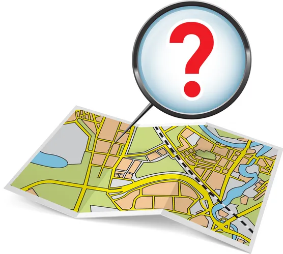

FAQs
How do I use noteworld?
Noteworld is designed to be easy to use and intuitively navigate
through. If you have any trouble using noteworld, please refer to
the user guide page .
How do I create an account?
Noteworld is free to use. You do not need to sign up to use it.
How do I save my data?
Noteworld takes care of saving data for you. Any changes made will
be saved right there in your local storage.
Do I need an internet connection to use noteworld?
Once you load noteworld in your browser, every activity is tracked
and saved in your local storage. You can keep using noteworld while
offline. However, loading the map will still require you to connect
to the internet if you are to navigate to a different location.
